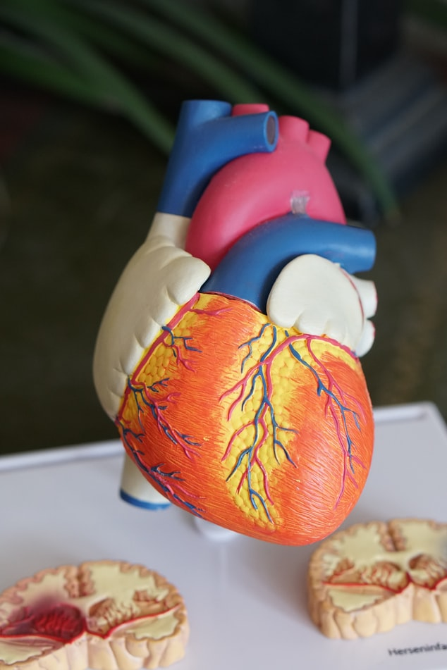
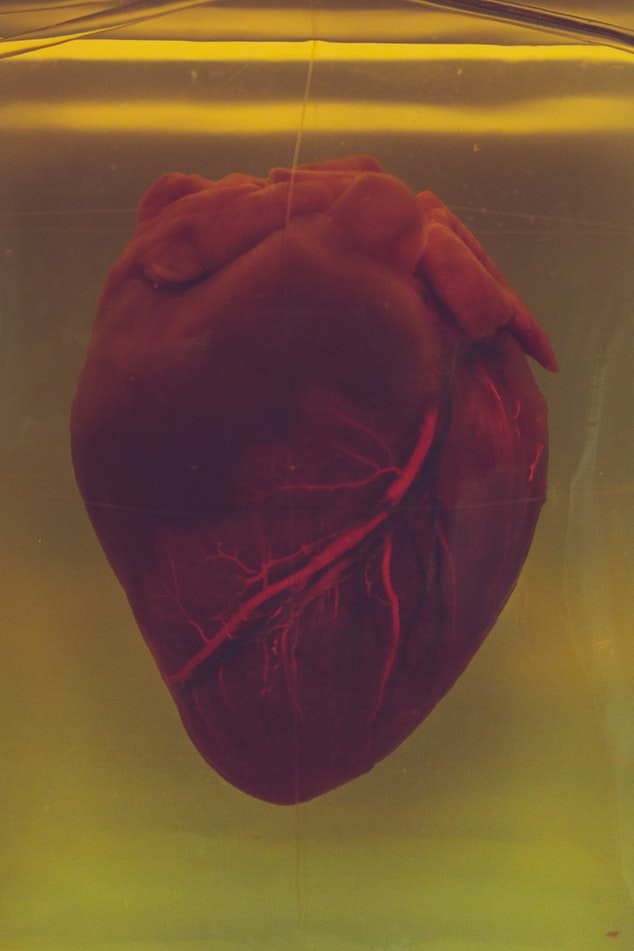

Calculating Respiration Rates from a Non-Contact Vitals Monitor
Using DSP techniques to analyze raw breathing signals.
Hello, my name is Tarek Hamid. I'm passionate about using data from physiological sensors to help diagnose and treat disease.
I believe in a proactive approach to healthcare; using biomedical instrumentation and computer systems, we can help lead healthier lives, diagnose conditions earlier, and stop disease
before it progresses. To create such devices requires highly interdisciplinary and collaborative teams, an environment I believe I thrive in.
I am currently a software engineer at JPMorgan Chase. Previously, I worked at the Department of Defense as an electrical engineer and as a scientist at Johnson & Johnson.
My formal training is in biomedical engineering and computer science.
In my spare time I enjoy playing basketball, volleyball, and chess, and reading.
Using DSP techniques to analyze raw breathing signals.
Analyzing gait signals to assess neuromuscular disease severity.
Analyzing my own data from an Oura Ring to determine the effect of Ashwagandha on my body.
Development of a glove to treat short-term symptoms of arthritis.
Designing a communication system using solely a user's EMG.

A proposed optimization to a complex cardiovascular surgery.
A wand that opens a box when the Alohamora motion is detected.

Extracting heart rate from the ECG using signal processing.